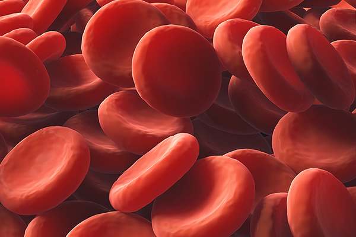

잇몸을 통해 일으키는 전신질환
주로 구강 세균이나 세균 유래 물질에 의해 발병하는 치주질환은 염증이 심하면 혈관 내로 염증이 침투해 당뇨병, 심혈관질환, 암 등을 포함한 심각한 전신질환을 일으킬 수 있습니다. 특히 잇몸이 붓거나 양치할 때 피가 나는 현상은 잇몸이 보내는 긴급 구조 신호로 방심해서는 안됩니다.
심혈관계 질환
47만명 국민건강보험공단 건강검진 코호트 자료를 활용한 연구 결과에서 구강검진을 받은 사람은 그렇지 않은 사람보다 심혈관 질환이 10% 낮게 나타나는 것으로 보고되었습니다. 심혈관 질환이 없는 40세 이상 24만 명을 대상으로 9.5년간 살펴본 결과, 하루 2회 이상 칫솔질과 연 1회 이상 스케일링을 하면 심혈관 질환 발생 위험을 각각 9%, 14% 줄어드는 것으로 나타났다.
당뇨병
당뇨환자의 경우, 다양한 합병증이 생기는데, 치주 조직에 대해서는 잇몸의 혈류 감소, 치조골 흡수, 치은염증, 구강위생 불량으로 인한 치석의 과다 침착 등이 일어나게 됩니다. 조절되지 않는 당뇨병의 경우, 잇몸 감염에 의한 치주병이 당뇨 합병증을 일으키고, 심혈관계와 신장의 기능에 이상을 주게 됩니다.
기타 전신질환
치주병원균은 혈류를 통하여, 타 기관으로 이동이 가능합니다. 임신부의 경우, 치주 병원균은 자궁 내로 이동하여 조산을 초래하기도 합니다. 치주 병원균이 폐로 흡입되는 경우, 폐렴을 일으키기도 하며, 동맥경화증, 류마티스관절염 등의 자가면역질환을 유발한다고 보고되고 있습니다. 백혈병, 혈소판 감소증 등의 혈액질환에서도 혈액응고인자 결핍으로 인한 치주 출혈과 염증이 발생합니다.